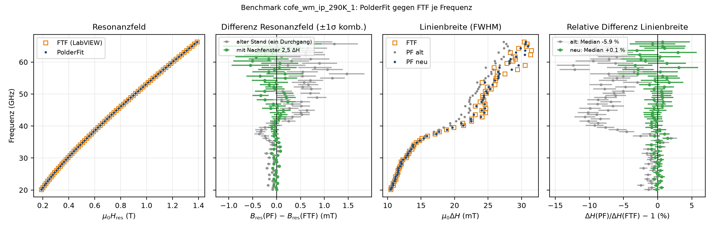

Robustheitsprüfung (reale Messdaten)¶
python tests/autowindow_runner.py [--no-plots] [--rerun-failed-only] – Daten unter testdata/, 90 s je Datei, mehrere Prozesse. Prüfung unabhängig vom AutoWindow reimplementiert (Selbsttest: absichtlich falsche Fenster werden erkannt); Ground Truth = Band der sortierten Gegenstücke.
| Status | Bedeutung |
|---|---|
OK |
Fenster plausibel, Fit unauffällig |
WINDOW_FLAGGED |
Fensterproblem, gemeldet (zulässig) |
WINDOW_FAIL |
Fensterproblem, still (Fehlerfall) |
KEIN_ZIEL |
keine Resonanz im Feldbereich |
Datei: CRASH, TIMEOUT, NICHT_FMR |
Letzter Lauf (286 Linescan-Dateien, 25 Probentypen, 12 GB, ~131 000 Resonanzen; tests/AUTOWINDOW_ROBUSTHEIT_BERICHT.md):
| Baseline | aktuell | |
|---|---|---|
| CRASH | 38 | 0 |
| still falsch | 2,3 % | 0,4 % (sortiert: 0) |
| OK + gemeldet | 97,7 % | 99,6 % |
Ergebnisse: tests/autowindow_results.json, Plots diag/. FTF-Benchmark: benchmark_ftf/BERICHT.md, python benchmark_ftf/run_benchmark.py.
